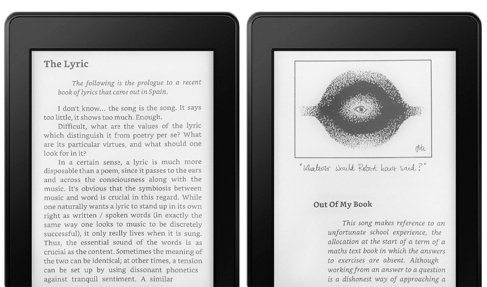

The Peter Hammill Book
In 2012 I first heard a song by Van der Graaf Generator. I was amazed by complex melodies, expressive manner of performance and amazing Hammill's voice. It was enough to realise this music is absolutely for me. Since then, VdGG and Peter Hammill became my true audio drugs and my cure from the sadness and troubles.
My interest has led me to the hammill.ru website, where I found a great collection of translations and explanations of Hammill's lyrics. Also there Mikayel Abazyan showed me a digital book with a content from two Peter Hammill's paper books and his songs, collected by pH7 web-group in the mid-1990s. But this book was in PostScript and it was awkward to read it on the electronic devices. So I decided to recompile it using the FB2 format, which is more recognizable to them.
«The Peter Hammill Book» contains stories, poems and drawings from «Killers, Angels, Refugees» and «Mirrors, Dreams, and Miracles», and a lot of P.H. and VdGG songs. I've added some new albums and painted Hammill's portrait for a cover. Hope you find this book useful ;)
